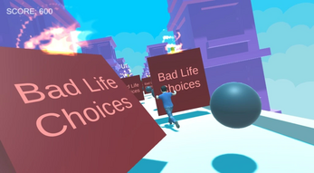
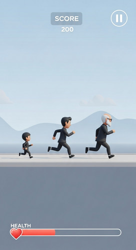
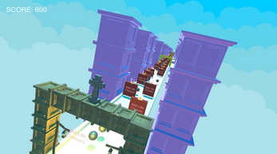

SYSTEM TARGET: LEGACY RUNNER SIMULATION
|
STATUS: OPERATIONAL
UTC: --:--:--
3D SIMULATION ENGINE // ARCHITECTURE SPECIFICATION
LEGACY RUNNER: PROCEDURAL SIMULATION
Unity 3D & C# Endless Runner featuring Procedural World Generation and Dynamic Life-Stage State Machines
SIMULATION CAPTURES



SYSTEM ARCHITECTURE
Legacy Runner is a 3D action simulation built on the Unity engine using C#. The core architecture features dynamic state machine controllers that continuously update player physics parameters across three life stages (Child → Adult → Elder). Every distance milestone triggers state transformations that alter jump gravity, lane velocity, and collision bounds.
PROCEDURAL GENERATION & MORAL LOGIC
- Procedural Segment Spawning: Object pooling algorithm spawning terrain chunks seamlessly while holding zero-garbage-collection allocations during runtime.
- Moral Choice State Machine: Dynamic portal triggers that track moral choices, altering subsequent run parameters upon player respawn.
- Death-Activated Power-Up Persistence: Asynchronous state saving storing collected telemetry items for post-life activation loops.
Unity 3D
C#
Procedural Generation
Blender 3D
State Machines